Una foresta vera, a due passi da casa.
Mamagrà è un impianto agroforestale di circa 10.000 m² tra Sant'Anastasia e Pomigliano d'Arco, nato durante la pandemia dalla trasformazione di un terreno di famiglia in un polmone verde per il territorio vesuviano.

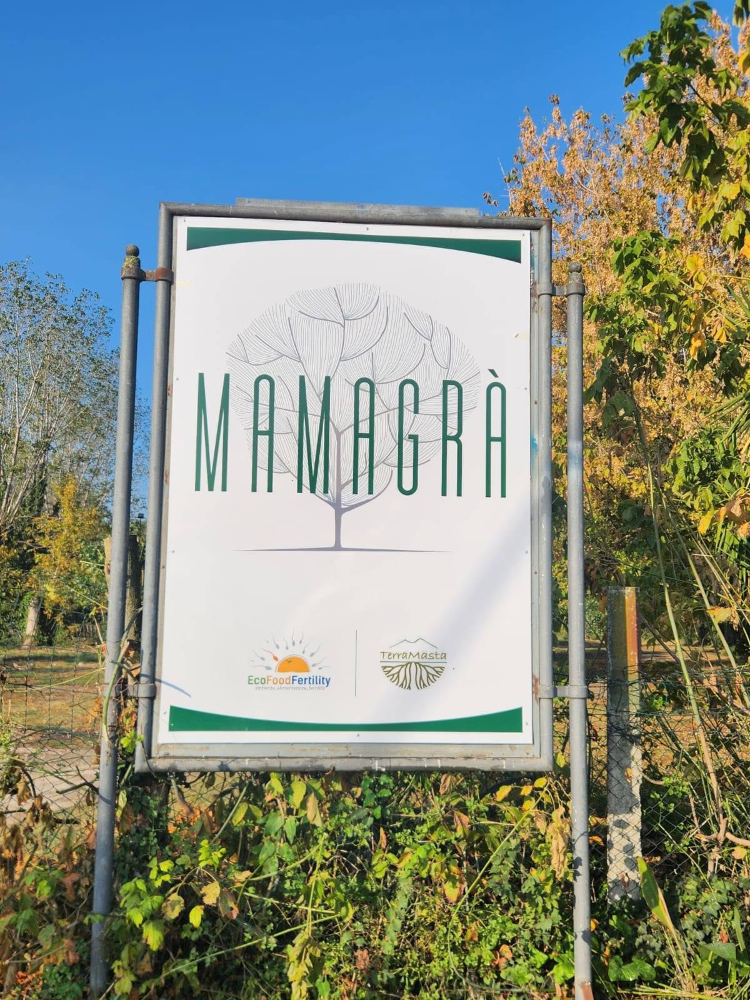
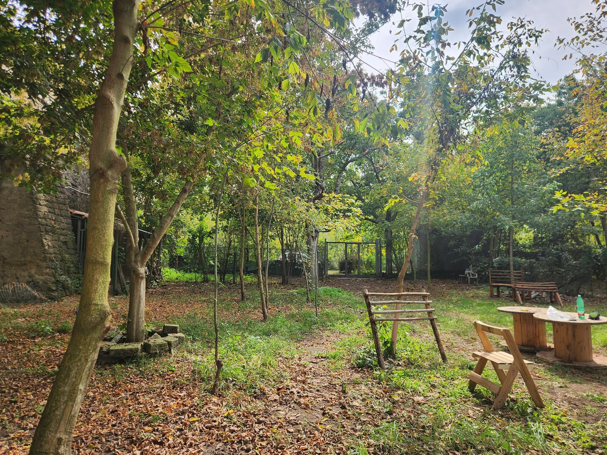
Chi siamo
Mamagrà nasce nel cuore della pandemia, quando Savio Giuseppe Di Dato — agroforestatore, laureato in Scienze e Tecnologie Alimentari — decide di trasformare un terreno di famiglia, accanto all'antica Masseria Madonna delle Grazie, in un ecosistema vivo e rigenerativo.
Oggi Mamagrà è un impianto agroforestale di circa 10.000 m² tra i comuni di Sant'Anastasia e Pomigliano d'Arco (NA): alberi maestosi come pioppi, aceri e olmi convivono con alberi da frutto, viti rigogliose e un tappeto di erbe aromatiche.
«Il Mamagrà ci insegna che non serve andare lontano per ritrovare la
natura. A volte basta piantare un albero.»
— Savio Giuseppe Di Dato
Il progetto è ideato e guidato da Savio Giuseppe Di Dato, proprietario del terreno e artefice di Mamagrà, anche responsabile della sede operativa Mamagrà di Ecofood Fertility a Sant'Anastasia.
- Rigenerazione — trasformiamo terreni abbandonati in ecosistemi sani e vivi.
- Equilibrio — natura, biodiversità e produzione sostenibile convivono.
- Benessere — un polmone verde che fa bene all'aria e a chi lo vive.
Il luogo
Il nostro punto di partenza è l'antica Masseria Madonna delle Grazie: la stiamo recuperando passo dopo passo, insieme ai circa 10.000 m² di impianto agroforestale che la circondano, per farne un presidio vivo di rigenerazione ambientale.

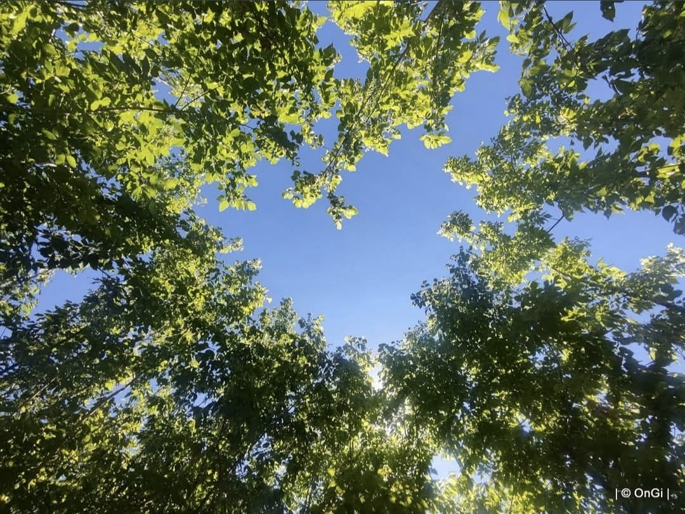


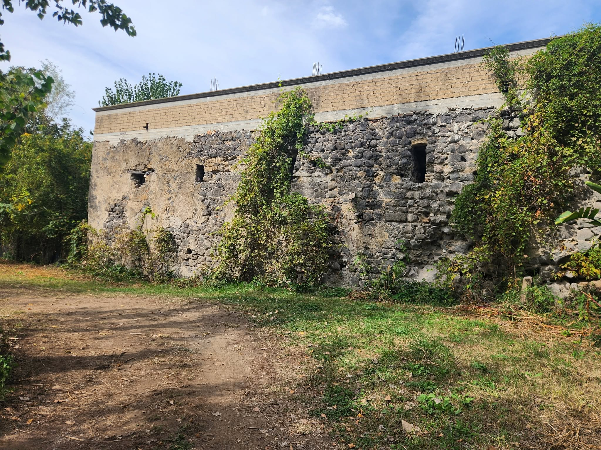
La foresta e l'orto
Il cuore vivo di Mamagrà: alberi, sentieri, il Campo Eubiotico e i frutti che nascono in ogni stagione.
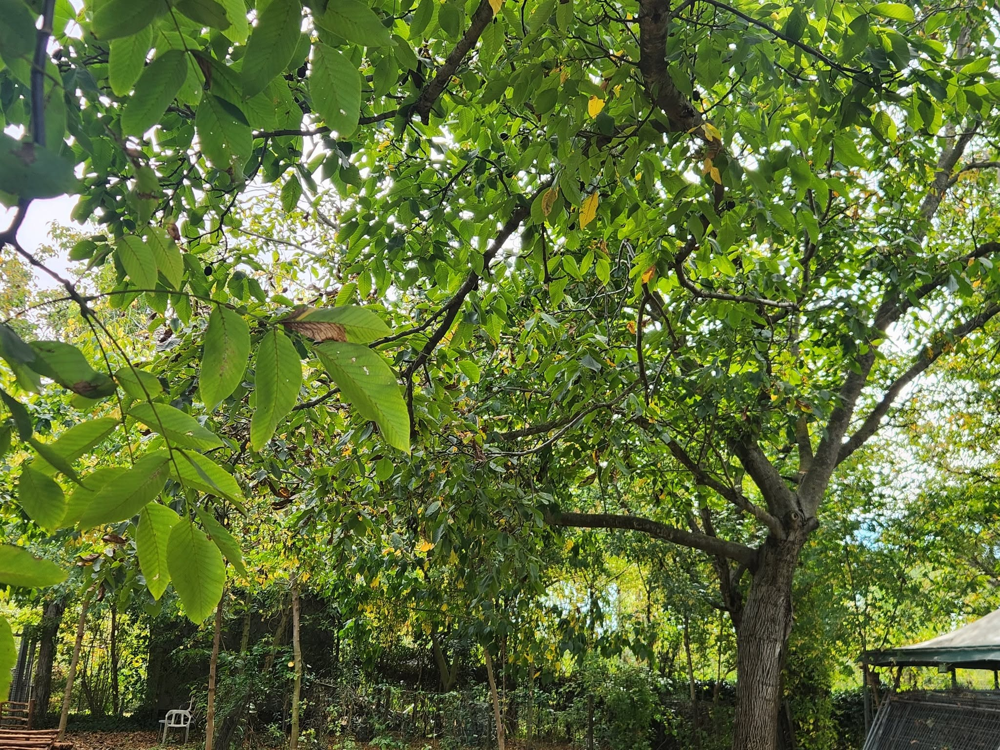
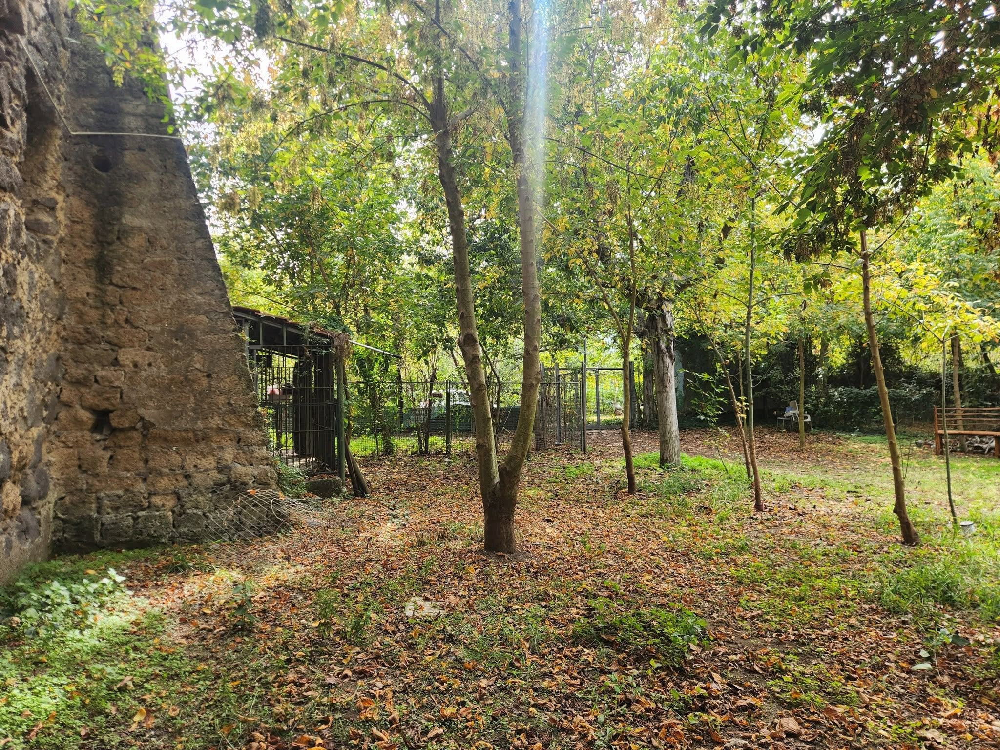
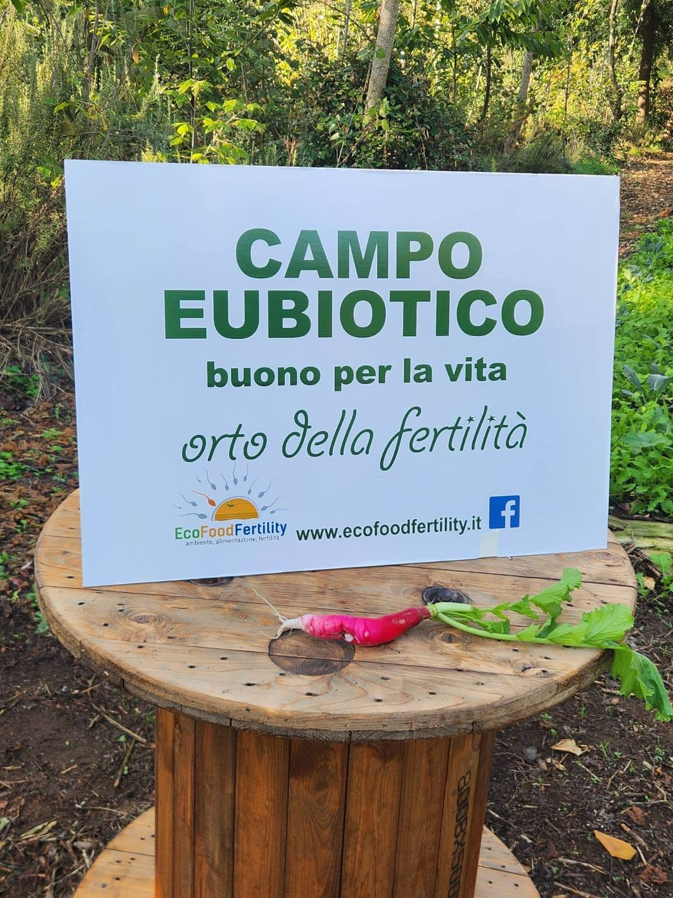
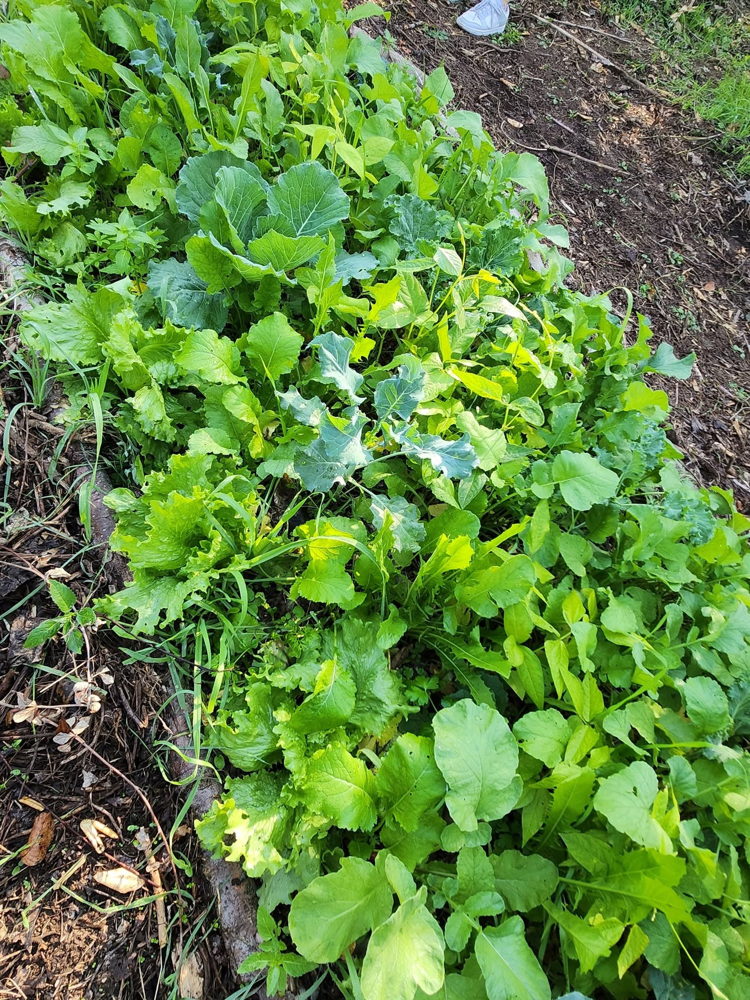
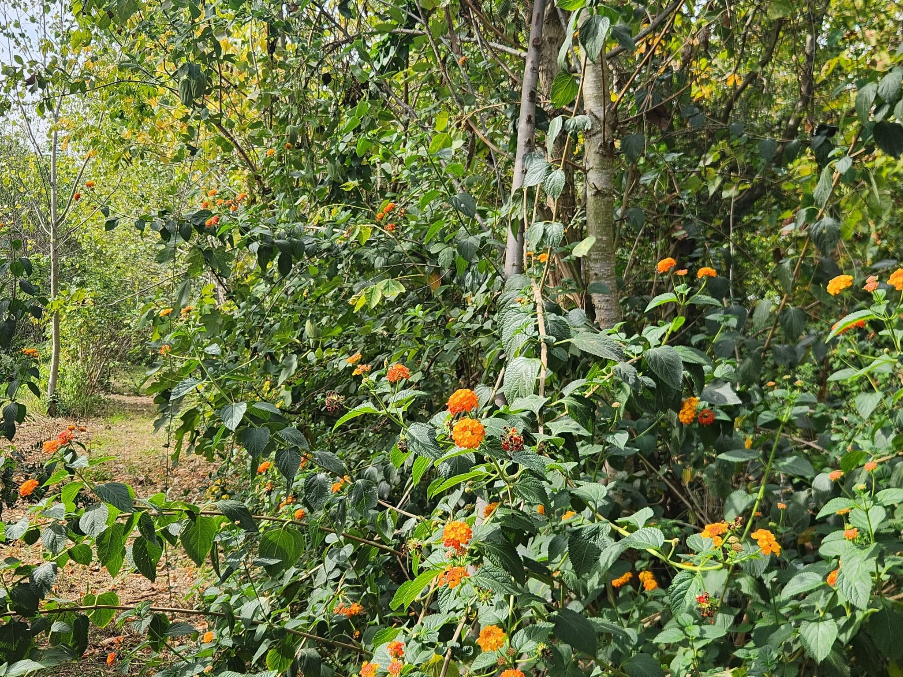
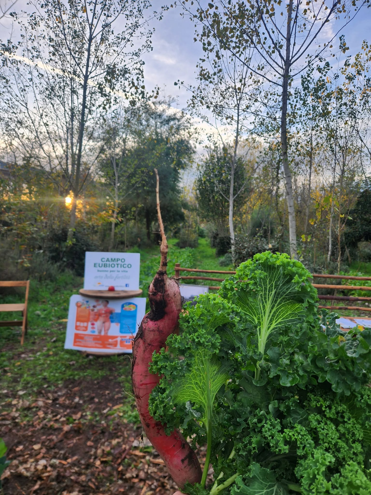
Un bosco che fa bene
Oltre a rigenerare il territorio, Mamagrà è pensato per il benessere di chi lo visita: un polmone verde a due passi da Napoli, dove riscoprire il contatto con la natura.
Aria più pulita
Un polmone verde periurbano che assorbe CO2 e ripulisce l'aria in un territorio spesso segnato dallo smog.
Fitoncidi e difese immunitarie
Gli alberi rilasciano fitoncidi, sostanze naturali che la ricerca scientifica associa a un rafforzamento delle difese immunitarie di chi cammina nel bosco.
Relax immediato
Chi entra nella foresta racconta di sentirsi più rilassato, come se la città fosse improvvisamente lontana.
Le visite a Mamagrà
Ogni anno Mamagrà accoglie visitatori, famiglie, ricercatori e curiosi che vengono a scoprire il progetto e a vivere la foresta in prima persona.
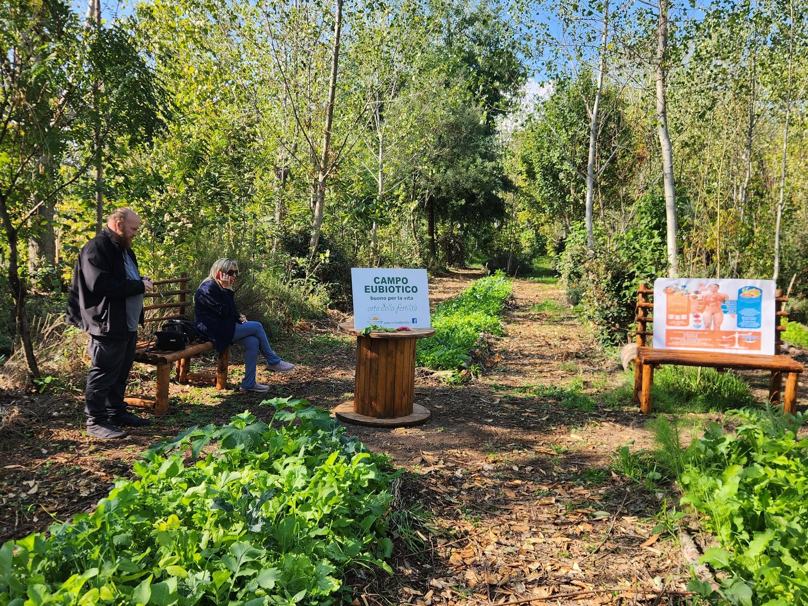
Ne parla anche la stampa di settore
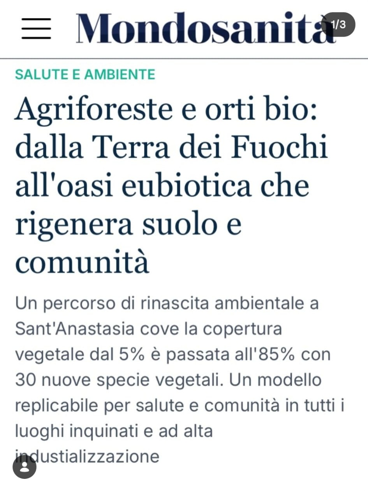
Fonte: Mondosanità — «Agriforeste e orti bio: dalla Terra dei Fuochi all'oasi eubiotica che rigenera suolo e comunità»
La storia della Masseria
Le origini della Masseria Santa Maria delle Grazie risalgono al XV secolo, quando apparteneva alla Congregazione dei Poveri Eremiti di San Girolamo: il primo documento conosciuto è datato 26 agosto 1482. Nei decenni successivi la proprietà crebbe grazie a numerose donazioni, fino a raggiungere circa 300 moggia di terreno.
Un ruolo centrale nella sua storia è quello di Giovannello de Cuncto, segretario di Casa d'Aragona, che nel 1515 lasciò in eredità i suoi beni alla cappella di Santa Maria delle Grazie. La masseria conserva ancora oggi lo schema a corte chiusa, con la cappella rurale, gli alloggi per i braccianti e i locali un tempo usati per la lavorazione del vino.
Con la soppressione napoleonica del 1807 la proprietà passò al generale francese Jean Baptiste Jourdan, che la rivendette nel 1817 ai fratelli Biase e Antonio d'Andreana. Tra Ottocento e Novecento la masseria cambiò ancora proprietà, passando tra le famiglie Ruffo, Caracciolo di Castagneto e Di Marzo.
Dal 2006 la masseria è gestita da Savio Giuseppe Di Dato, che ne sta curando il recupero strutturale e il restauro conservativo, insieme alla rigenerazione del terreno circostante che oggi ospita Mamagrà.
Il territorio
Mamagrà si trova tra i comuni di Sant'Anastasia e Pomigliano d'Arco (NA), in via Madonna delle Grazie, ai piedi del Vesuvio: qui pioppi, aceri e olmi convivono con alberi da frutto, viti ed erbe aromatiche, in un'area agricola che vogliamo custodire e far crescere insieme al nostro impianto agroforestale.

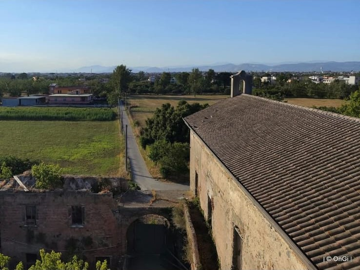
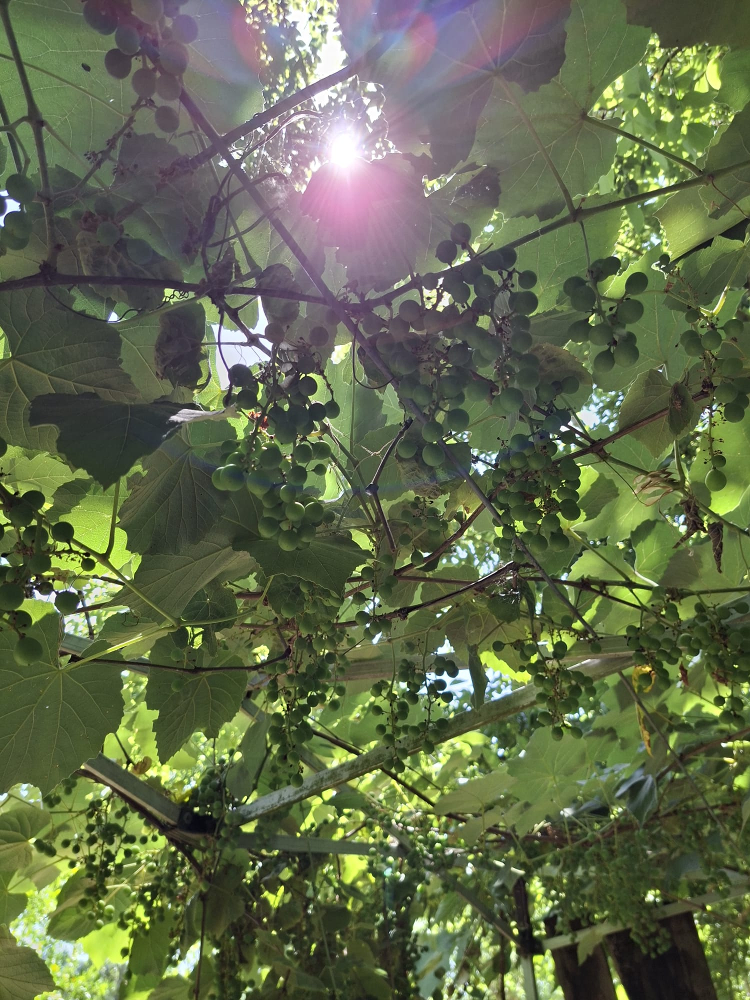
Snout Forest
Pensione ~ Asilo ~ Educazione per cani
Snout Forest nasce nel cuore di una foresta periurbana, all'interno di oltre 10.000 metri quadrati di spazi verdi, un patrimonio naturale che rappresenta l'anima stessa del progetto Mamagrà. Immerso in ampi spazi verdi e circondato dalla natura, il complesso è stato pensato per offrire ai cani un ambiente sicuro, fresco e stimolante, dove poter correre, esplorare, socializzare e vivere esperienze autentiche all'aria aperta.
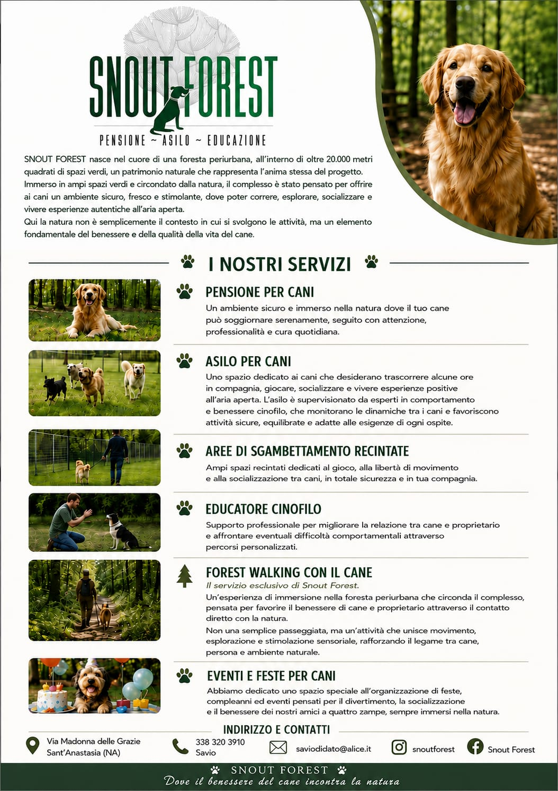
I nostri servizi
Pensione per cani
Un ambiente sicuro e immerso nella natura dove il tuo cane può soggiornare serenamente, seguito con attenzione, professionalità e cura quotidiana.
Asilo per cani
Uno spazio dedicato ai cani che desiderano trascorrere alcune ore in compagnia, giocare, socializzare e vivere esperienze positive all'aria aperta, supervisionato da esperti in comportamento e benessere cinofilo.
Aree di sgambettamento recintate
Ampi spazi recintati dedicati al gioco, alla libertà di movimento e alla socializzazione tra cani, in totale sicurezza e in tua compagnia.
Educatore cinofilo
Supporto professionale per migliorare la relazione tra cane e proprietario e affrontare eventuali difficoltà comportamentali attraverso percorsi personalizzati.
Forest walking con il cane
Il servizio esclusivo di Snout Forest: un'immersione nella foresta periurbana che circonda il complesso, pensata per favorire il benessere di cane e proprietario attraverso il contatto diretto con la natura.
Eventi e feste per cani
Uno spazio speciale dedicato all'organizzazione di feste, compleanni ed eventi pensati per il divertimento, la socializzazione e il benessere dei nostri amici a quattro zampe, sempre immersi nella natura.
Collaborazioni
Mamagrà è la sede operativa del progetto Ecofood Fertility a Sant'Anastasia, di cui Savio Giuseppe Di Dato è responsabile.
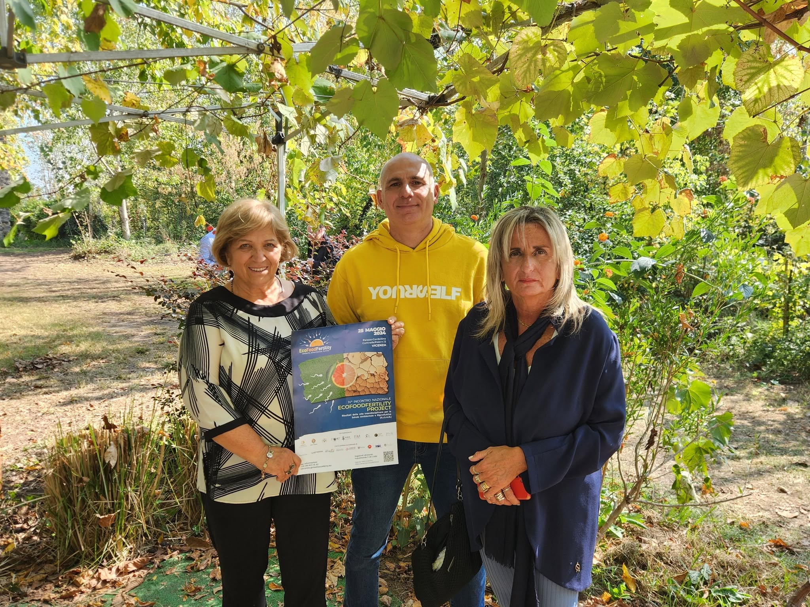
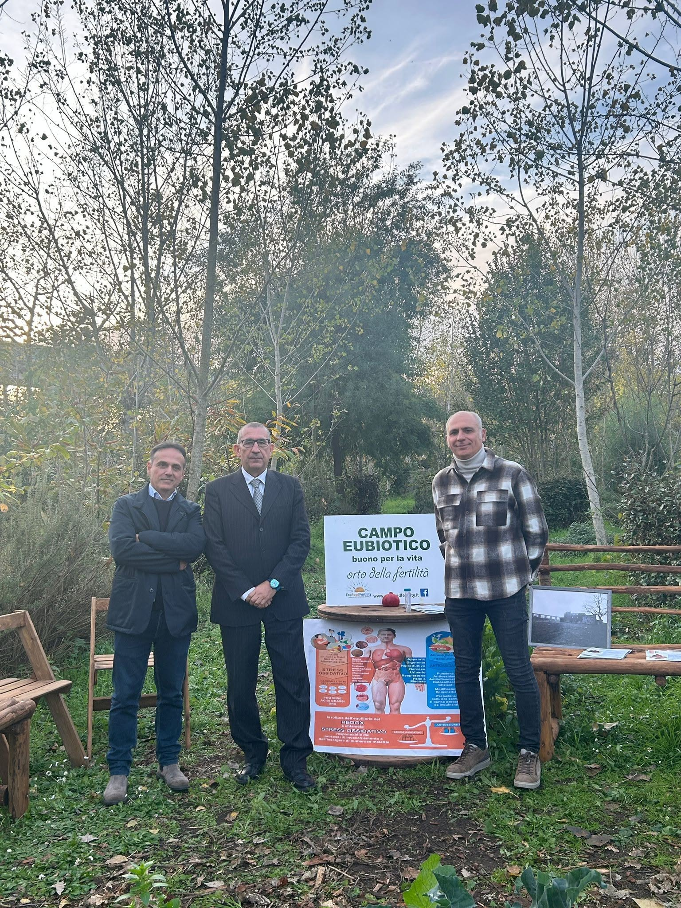
Media e Contatti
Mamagrà nei media
Il progetto è stato raccontato anche dalla televisione e dalla stampa: qui trovi il servizio andato in onda e gli articoli dedicati a Mamagrà.
- Il Meridiano News — «Mamagrà, il miracolo verde tra Sant'Anastasia e Pomigliano d'Arco: una foresta a due passi da casa» (maggio 2026)
Seguici sui social
Contatti
Scrivici per informazioni, collaborazioni o per partecipare ai nostri progetti di riforestazione.
Contatto
Savio Giuseppe Di Dato
Telefono
+39 338 320 3910
Indirizzo
Via Madonna delle Grazie, Sant'Anastasia (NA)